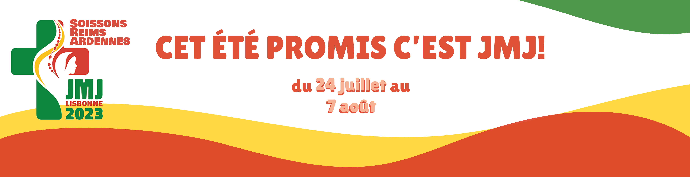

<!DOCTYPE html>
<html lang="en">
<head>
    <meta charset="UTF-8">
    <meta http-equiv="X-UA-Compatible" content="IE=edge">
    <meta name="viewport" content="width=device-width, initial-scale=1.0">
    <link rel="stylesheet" href="style_infos.css">
    <title>Infos pratiques</title>
</head>

</html>
<header class="main-head">
    <nav>
        
        <h1 id="log" href="index.html" id="gauche">JMJ2023</h1>
        <ul>
            <li><a id="black" href="index.html">Accueil</a></li>
            <li><a id="gold" href="programme.html">Programmes</a></li>
            <li><a id="green" href="inscriptions.html">Inscriptions</a></li>
            <li><a id="red" href="evenements.html">Evenements</a></li>
            <li><a id="black" href="infos.html" target="_blank">Infos</a></li>
            <li><a id="black" href="contact.html" target="_blank">Contact</a></li>
        </ul>
    </nav>
</header>
<div>
    
    </div>
</br>
</br>
</br>
</br>
</br>

<div class="flex0">
<div id="flex1">
<p>
    <strong>Tu veux parler des JMJ ? </strong></br>On te fournit tout ce dont tu as besoin !</br></br>


</p>
</br><a id="none" href="https://www.soissons.catholique.fr/laccueil/352677-jmj-2023/ "  class="fill" target="_blank"><span>Pack communication</span></a>
    </div>
</div>
</br>
</br>
</br>
</br>
</br>
<div class="flex0">
    <div class="flex1">
    <div class="border1">
        <p>
        </br> <strong>La liste des fournitures :</strong> </br>
        </br>  - un sac à dos de randonnée (éviter la valise)</br>
        </br>- un petit sac pour la journée</br>
        </br>
            Pour la nuit à Fátima et la dernière soirée (+ autres si pas de logement en familles)</br>
        </br> - tapis de sol</br>
        </br>- sac de couchage</br>

        </br>Pour la douche quand logement collectif :</br>
        </br>- maillot de bain</br>
        </br>- tongs</br>
        </br>- serviette de toilette</br>

        </br>- de bonnes chaussures confortables pour marcher</br>
    </br>- de quoi se protéger du soleil</br>
    </br>- de quoi se protéger des moustiques</br>
    </br>- de quoi se protéger de la pluie</br>
    </br>- de quoi se protéger du froid (le soir)</br>
    </br>- de quoi se couvrir dans les églises</br>
            
    </br>- une gourde</br>

    </br> - une batterie externe/une multiprise</br>
    </br>- (une radio pour la retransmission des grands évènements)</br>

    </br>- du papier toilette </br>
    </br>- des lingettes pour bébé</br></br>
        </p>
    </br>
        </div>
    </div>
</div>